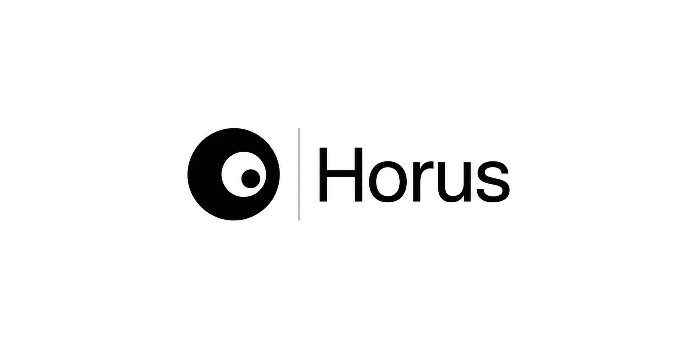

Horus rebuilds borrower cash flows from scanned statements and ledgers — faster, cleaner, and audit-ready.
Built for credit analysts handling scanned statements, ledgers, and inconsistent borrower records.
{{ step.desc }}
A productivity tool for credit teams — Horus prepares the numbers; your analysts make the call.
{{ f.desc }}
Illustrative turnaround from pilot-style case profiles. Actual figures depend on document quality and case complexity.
| Case | Old (days) | New (days) | Analyst hours saved | Notes |
|---|---|---|---|---|
| {{ c.name }} | {{ c.old }} | {{ c.new }} | {{ c.saved }} | {{ c.notes }} |